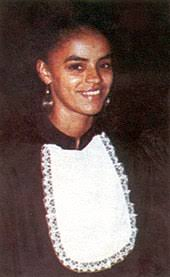
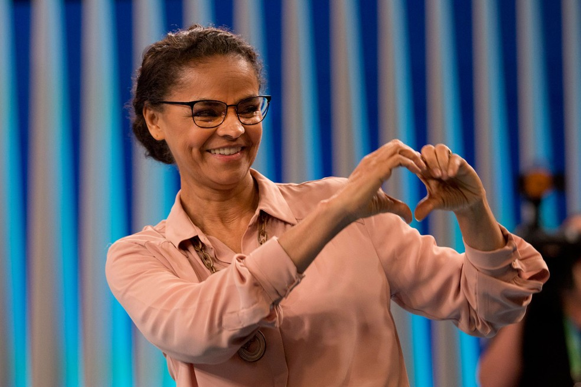

Marina Silva-Uma Mulher para se inspirar!
Maravilhosa Marina
.jpeg)
Marina Silva é ambientalista e política brasileira. Recebeu em Londres, no Palácio de Saint James, das mãos do príncipe Philip da Inglaterra, a "Medalha Duque de Edimburgo", por sua luta em defesa da Amazônia brasileira. Recebeu o prêmio da "Fundação Norueguesa Sophie", por seu trabalho em defesa da Floresta Amazônica. Marina recebeu da ONU o prêmio "Champions of the Earth", o maior prêmio concedido pela Organização, na área ambiental. Recebeu nos Estados Unidos o "Prêmio Goldman do Meio Ambiente pela América Latina e Caribe". No dia 27 de julho de 2012, a convite do Comitê Olímpico Internacional, na abertura dos Jogos Olímpicos em Londres, Marina Silva desfila carregando a bandeira, com os anéis olímpicos. Junto com ela estavam o secretário geral da ONU, Ban-Ki-moon, o fundista etíope Haile Gebreselassie, o pugilista americano Muham mad Ali, o maestro argentino Daniel Barenboim, e os ativistas dos direitos humanos, Sally Becker, Shami Chakrabarti e Leymah Gbowee.
De analfabeta a Profesora Universitaria
Ainda na adolescência, Marina pensou em ser freira e descobriu que precisaria aprender a ler e escrever para tanto. Foi na época em que contraiu hepatite – a primeira das três que foi acometida – e chegou a Rio Branco em busca de tratamento. Na capital, foi acolhida na casa das irmãs Servas de Maria Reparadora, onde dedicou-se aos estudos religiosos e escolares sustentando-se como empregada doméstica. O progresso foi rápido. Entre o período de Mobral, no qual se alfabetizou, até a graduação em licenciatura em História pela Universidade Federal do Acre transcorreram apenas dez anos – sua formação foi complementada posteriormente com as pós-graduações em Teoria Psicanalítica (Universidade de Brasília) e em Psicopedagogia (Universidade Católica de Brasília).
Carreira Politica
A vida pública começou em 1986, aos 28 anos. Marina disputou sua primeira eleição concorrendo a uma vaga na Câmara dos Deputados. Fenômeno nas urnas, ficou entre os cinco candidatos mais votados do país, mas seu partido não conquistou o quociente eleitoral mínimo exigido. Em 1988, se elegeu vereadora de Rio Branco com uma votação expressiva. Em 1990, tornou-se deputada estadual e em 1994, chegou à Brasília eleita a senadora mais jovem da história da República. Tinha 35 anos. Foi reeleita em 2002, com votação quase três vezes superior à anterior, e em 2003 nomeada ministra do Meio Ambiente, cargo que ocupou com excelência até 2008, quando retornou ao senado para terminar de cumprir o mandato. Candidata à Presidência da República em 2010, obteve 19,6 milhões de votos, cerca de 20% dos votos válidos, e terminou o pleito na terceira posição. Em 2014, depois da trágica morte do ex-governador Eduardo Campos, assumiu a frente da chapa em que era vice-presidente e novamente finalizou a votação em terceiro lugar, desta vez com 22 milhões de votos. Em 2018, pela Rede Sustentabilidade, concorreu pela terceira vez à Presidência da República. A expressão global e a representatividade de Marina Silva podem ser medidas pela lista de prêmios que conquistou. Em 1996, recebeu o prêmio Goldman, considerado o Nobel do Meio Ambiente. Em 2007, o jornal britânico The Guardian incluiu a então ministra entre as 50 pessoas que podem ajudar a salvar o planeta. No mesmo ano, conquistou o Champions of the Earth, o principal prêmio da ONU na área ambiental e, em 2008, recebeu das mãos do príncipe Philip da Inglaterra, no palácio de Saint James, em Londres, a medalha Duque de Edimburgo, em reconhecimento à sua trajetória e luta em defesa da Amazônia brasileira – a honraria mais importante concedida pela rede WWF (World Wide Fund for Nature). Com mais de quatro décadas de militância e vida pública, Marina Silva é referência para diferentes gerações e conquistou um lugar de destaque na história do Brasil. Mãe de quatro filhos, mulher, negra, de origem humilde, ex-seringueira, empregada doméstica e professora de história, é um exemplo de perseverança, de que o trabalho e o esforço, aliados ao comprometimento com as causas socioambientais mais importantes, pode mudar o rumo da vida das pessoas e salvar o planeta. Veja mais sobre essa Maravilhosa